Read QA and Cleaning¶
Before using the raw sequences generated by the sequencing machines we have to check their quality and eventually to clean them to get rid of adaptor, contaminants and low quality regions.
{kind=link}
Assessing the read quality¶
We can assess the quality of the reads by taking a look at their length distribution, phred quality distribution, nucleotide frequencies and complexity. It is highly recommended to take a look at the excellent documentation found in the fastqc and prinseq sites.
Software to assess the read quality:
The length distribution of the reads is a basic quality check. We have to make sure that the length distribution complies with the expected distribution for the sequencing technology that we have used.
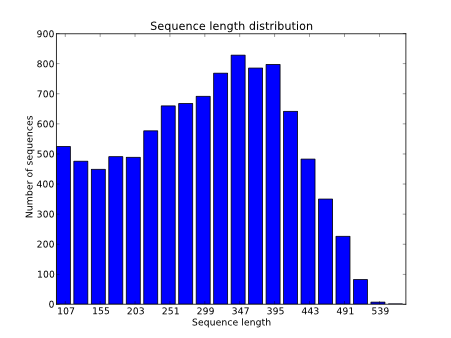{kind=link}
For Illumina it would be typical to obtain the same sequence length for all reads.
We should also evaluate the sequence quality. We can do it by calculating some statistics like: mean quality, Q20 and Q30. Q30 is the percentage of bases in the reads with a phred quality equal or bigger than 30. For instance:
Q20: 86.85
Q30: 82.39
minimum: 2
maximum: 41
average: 32.32
We can also evaluate the quality by taking a look at the quality distribution.
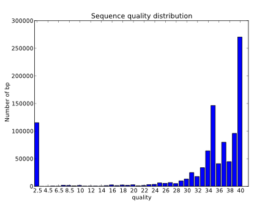{kind=link}
Another very useful and common way of evaluating the quality is to generate a boxplot with the qualities per position along de reads.
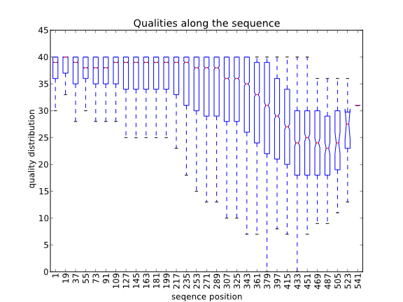{kind=link}
Also, to spot the presence of adaptors at the first positions of the reads it is common to represent the frequency of each nucleotide for each position. Ideally, in these charts, all positions should have the same nucleotide frequencies, but it is common to find adapter contamination or biases produced during the library construction protocol.
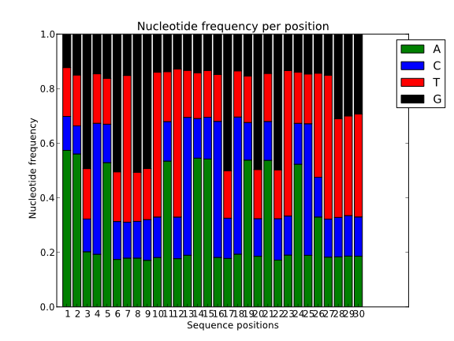 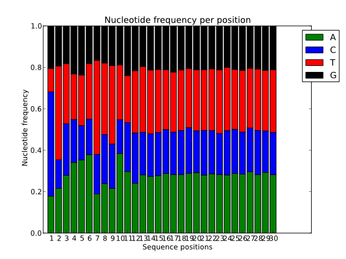{kind=link}
{kind=link}
It can be also quite useful to study the k-mer composition of the reads. This will give us an idea of the overall complexity of the sequence and also it can serve to spot highly repetitive k-mers corresponding to adapters, poli-A or repetitive sequences.
Practical tasks: Read quality assessment¶
Analyze the quality of the given
454 readsby using the software FastQC.
The first step will be to download the reads file into a folder named practice. Once we have the file we can open it with the FastQC utility. To run FastQC open a terminal and execute the program in the terminal by writing fastqc. FastQC will create very interesting statistics regarding our reads.
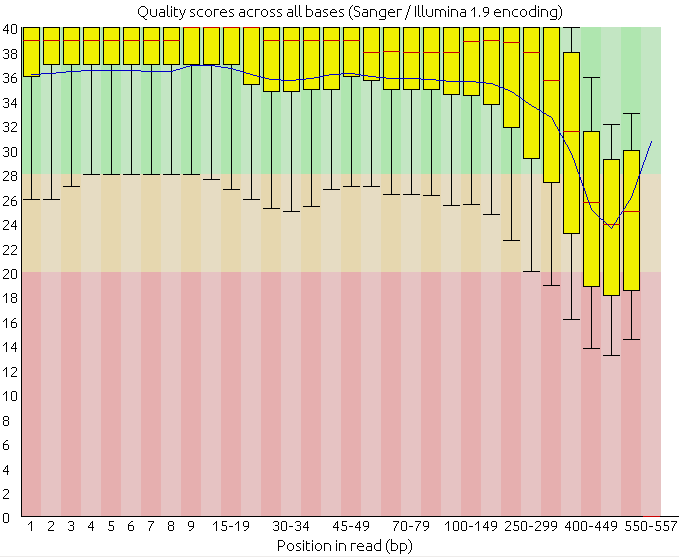 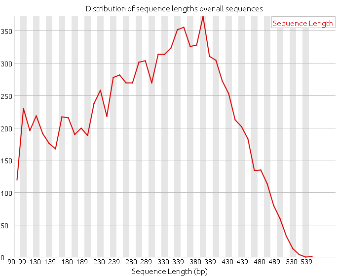 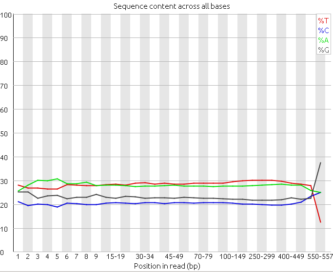 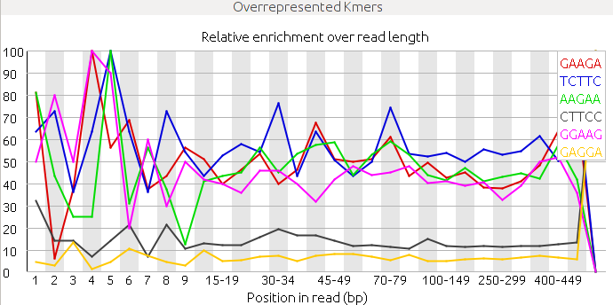{kind=link}
{kind=link}
{kind=link}
{kind=link}
2. Analyze the following reads files and determine: the sequencing technology employed, the overall quality and the possible problems and solutions.
Files: reads_1, reads_2 and reads_3.
Specific problems¶
Using FastQC software detect the problems and the possible causes in these examples:
A sample of an amplicon sequencing of brca1 and bcra2 coding regions. Data from BMC Clinical Pathology 2015, 15:5 doi:10.1186/s12907-015-0004-6.
Read cleaning¶
The raw sequences can have some regions that could be problematic, for instance vector or adapter sequences and that it would be advisable to remove to avoid problems with downstream analyses. Some of these problems are:
Vectors
Adapters
Low quality
Low complexity
Contaminants
Duplicates
Error correction
It would be OK to keep these regions if the downstream analysis software is prepared to use this noisy information or if at least would not be negatively affected by it, but in a lot of real world scenarios the downstream software will be negatively affected or can even choke if we do not get rid of this extra noise. For instance, if we want to map the reads with a local mapper (e.g. bowtie2) not trimming the reads wouldn’t be so problematic, because the mapper would be capable of even mapping reads with adapters in it. But if we plan to use a global mapper we would be better off trimming the adapters and the bad quality regions to be able to map more reads.
The cleaning programs could be classified in filters and trimmers. The filtering software remove the reads that do not meet the criteria and the trimming software clip only certain regions.
Vectors¶
During the cloning and sequencing processes several vectors and adapters are usually added to the sequences. If we were to use these raw sequences these vectors are likely to interfere with the rest of the analyses, although this is highly dependent on the analysis and the software that will be applied to the reads. If we know for sure that the software that we are using is prepared to deal with these vectors we could go on without the cleaning, but otherwise it is advisable to do it.
It is not common to find cloning vectors in the NGS reads because the cloning step is skip in most of these experiments, but they are common in the Sanger sequences. If we want to remove them there are two main approaches to find them. If we know the exact vector and cloning site sequence we could use lucy. lucy looks carefully for the cloning sites and for the given vectors and recommends how to trim the sequences. If we are not sure about which sequencing vector was used we could blast our reads against the UniVec database and trim the regions with significant blast matches.
Adapters¶
The main practical difference, in the context of the sequence analysis, between the vectors and adapters is the sequence length, the adaptors are short sequences and they are common in the NGS reads. For the long vectors we could use Blast, but to look for the adapters, that are short, with the standard Blast algorithm is not the best approach. It is better to use the blast-short algorithm also implemented by the NCBI Blast software.
When the adapters are shorter than 15 base pairs the algorithms used by the aligners might fail. An alternative in these case it to look for exact matches or to use the cutadapt software.
The blast-short algorithm is used by seq_crumbs.
Quality¶
For some analyses it could be advisable to remove the regions of bad quality. Some people advise against the low quality trimming of the sequences, because even the low quality regions have information in them. But it is common for the downstream software not to deal particularly well with the low quality regions of the reads, in this case it is important to remove these regions. The usual approach to get rid of the low quality regions is to do a window analysis setting a threshold for the quality. prinseq or seq_crumbs can do this cleaning. Alternatively lucy can clean the long reads.
If the reads have no quality we can estimate which regions had a poor sequencing quality by looking at the density of Ns found in the sequence.
Duplicates¶
In theory, we would like to obtain one read from every molecule (template) of the original library, but this is not always the case. Due to the PCR amplification and to the detection systems we could end up with even thousands of reads of some molecules. This PCR amplification problem is particularly noteworthy in the systems that use emulsion PCR and in the mate-pair Illumina libraries. In Illumina there are also optical duplicates due to a cluster being read twice. These optical duplicates can be detected because they will appear very close in the slide. The number of expected sequence duplicates depends on the depth of the sequencing, the type of library and the sequencing technology used.
If we do not remove these duplicated reads from the analysis we could calculate skewed allele frequencies in a SNP calling experiment, or false expression profiles in a RNA-seq experiment, or we could give false assurance to an assembler. The problem with the duplication filtering is that when the reads are removed we could be removing reads covering the same region, but that come originally from different molecules, for instance from the different chromosomes of a diploid individual. By removing them we could lose some information.
Ideally, two duplicated reads should had the same sequence and we could look for them just by searching for identical sequences, but due to the sequencing errors they could be not identical but merely very similar. If we have a reference genome a usual method to remove these duplicates is to remove them once we have align them to the reference. If we don’t have a reference we could look at least for reads that are identical. The software PRINSEQ has a module to filter identical duplicated reads.
Some people do not recommend to remove the duplicates using the existing methods. For instance in a thread on seqanswers a couple of users comment:
NGSfan: For example, there was a recent whole exome paper where they did both single end and paired end sequencing. They marked duplicates in both, and found ~28% and ~8% duplicates respectively. In fact, when they treated the paired ends as single ends (removing the connection between paired ends), the 8% jumped back up to 28%. That is a massive amount of data loss. So, those who have been throwing away duplicates, particularly single ends and based solely on coordinates, are losing a lot of data.
kmcarr: Even that 8% may be an overestimate of the true PCR duplicates. I recently attended the Illumina Midwest Users Group meeting and an Illumina scientist presented some data on duplicate identification (it may have been the data you referred to since the percentages sound about the same). However they went a step further in distinguishing fragment duplicates from PCR duplicates. They prepared their paired end libraries using Illumina MID tagged style adapters, but instead of a finite set of known MID sequences, the adapters were constructed with random bases where the barcode would be. Now for each cluster they had three data points to compare, reads 1 and 2 and their respective alignment positions on the reference genome, plus the random, 6bp sequence in the MID position. A read would need to match all three of these to be called a PCR duplicate. When they added these random tags they found that the number of identified duplicates dropped from 8% to ~1%.
lh3: The first time I and a few others learned about the PCR duplicates was around the middle of 2007, when Illumina (at that time Solexa) were collaborating with Sanger on SNP discovery in data from a flow-sorted X chromosome. Because Illumina/Solexa was short of DNA, they used very little remaining DNA to construct the library. When we looked at structural variation and SNP calls from that data set, we found many recurrent “sequencing” errors. Richard pointed out that this was likely to be caused by PCR. I then implemented the “rmdup” component in maq. When we applied that, we got much cleaner SNP/SV calls. In the end, the paper on this data set was published in Nature in 2008 as one the first three whole-genome resequencing papers using Illumina. PCR duplicates really affect SNP calling. It is true that when the duplicate rate is low, they probably have little impact to the final results, but for most resequencing project, removing duplicates does almost no harm. Why not do that?
Michael.James.Clark: Removing duplicates has been demonstrated a number of times to improve SNP detection, particularly on samples sequenced at low read depths and in cancer samples.
The read duplication can also be an essential step to ease the de novo assemblies.
Low complexity¶
Low complexity reads can impact several downstream analyses. These low complex reads can be a burden specially for the assemblers, so, in some cases, it could be advisable to filter them out. The NCBI Blast distribution includes dust, a program to mask low complexity regions.
Contaminants¶
In the samples to analyze there can be different kinds of contaminants:
Due to the sample preparation, e.g. E. coli.
Mitochondrial and chloroplastic in genomic samples.
rRNA in transcriptomes
pathogens in infected samples
This contaminants should be minimized during the sample preparation, for instance extracting the genomic DNA from isolated nuclei, but if we have them in our reads we can filter them out by running blast searchers.
Error correction¶
By trimming and purging the reads the mean sequencing quality of the resulting reads can be improved, but some information is lost. An alternative has been developed and implemented in several programs that tries to correct the errors in the reads. The overall idea is based on gathering the reads, or parts of them, that correspond to the same genomic region and to assume that the changes in low frequency should be due to sequencing errors. This method has been commonly used in the SOLiD world and a review have been recently published: A survey of error-correction methods for next-generation sequencing.
Some conclusions can be derived from the mentioned review. The proposed algorithms and methods are quite new and differ in some key points: quality of the result, memory and time consumed, and scalability. Different methods have been derived for 454/Ion Torrent and Illumina due to their different error models. As the review explains “error correction with respect to a specific genomic position can be achieved by laying out all the reads covering the position, and examining the base in that specific position from all these reads. As errors are infrequent and random, reads that contain an error in a specific position can be corrected using the majority of the reads that have this base correctly.”
There are methods based on the study of the k-mers frequencies and based on multiple sequence alignments. The authors conclude that these methods are more mature for the Illumina reads due to the popularity and the abundance of them. For Illumina Reptile, HiTEC and ECHO are generally more accurate and have better scalability than other methods. The drawback is that most of the software tested failed with some datasets. Only four programs: HSHREC, Reptile, SOAPec and Coral—succeeded in generating results for all data sets. For 454 and ion-torrent the authors recommend Coral over HSHREC.
The study carried out in this review was done in bacteria and in Drosophila.
After the mentioned review a new method based on a different algorithm has been proposed and implemented in the software lighter. The authors claim that this algorithm is faster and requires much less memory despite having a comparable accuracy to the other algorithms. I’ve tried bless with good results.
Caution should be taken when applying these methods to pooled samples or to polyploids.
To trim or not to trim¶
Should we trim/clean the reads? And if yes how much? Of course, the answer will depend on the analysis that we are doing. The requirements of a de novo assembly, a RNA-Seq expression analysis and a SNP calling are quite different. Some reflections about this issue have been published: An Extensive Evaluation of Read Trimming Effects on Illumina NGS Data Analysis and Is trimming beneficial for RNA-Seq?.
Usual read cleaning software¶
There are plenty of software to process the reads, but some that we have used are:
Practical tasks¶
Cleaning adaptor and quality¶
We have detected in the quality check of some reads the presence of some adapter introduced during the cloning of the library. We are informed that the adapters used were: “AAGCAGTGGTATCAACGCAGAGTACATGGG” and “AAGCAGTGGTATCAACGCAGAGTACTTTTT”. We are going to clean this adaptor and we will also trim the bad quality regions. Once we have finished the process we will compare the statistics of the reads before and after the cleaning process.
We can clean sequences with various aplications, first we will try with Trimmomatic.
First download the reads reads_1 and the fasta file with the adapters to the directory practice.
Check that the files are in the correct directory and make that directory your working directory:
ngs_user@machine:~/practice$ cd
ngs_user@machine:~$ cd practice/
ngs_user@machine:~/practice$ pwd
/home/ngs_user/practice
ngs_user@machine:~/practice$ ls
reads_1.fastq.gz
trimmo_adapters.fasta
With trimmomatic we can add as many steps as we need. First, we are going to remove the adapters(ILLUMINACLIP:trimmo_adapters.fasta:2:30:10), then we will perform a quality trimming (SLIDINGWINDOW:4:15) and finally, we will remove remaining shorter than 40 nucletide sequences(MINLEN:40). All steps are configured in the same command.:
ngs_user@machine:~/practice$ TrimmomaticSE reads_1.fastq.gz reads_1.clean.fastq.gz ILLUMINACLIP:trimmo_adapters.fasta:2:30:10 SLIDINGWINDOW:4:15 MINLEN:40
TrimmomaticSE: Started with arguments:
reads_1.fastq.gz reads_1.clean.fastq.gz ILLUMINACLIP:adapters.fasta:2:30:10 SLIDINGWINDOW:4:15 MINLEN:40
Automatically using 1 threads
Using Long Clipping Sequence: 'AAGCAGTGGTATCAACGCAGAGTACATGGG'
Using Long Clipping Sequence: 'AAGCAGTGGTATCAACGCAGAGTACTTTTT'
ILLUMINACLIP: Using 0 prefix pairs, 2 forward/reverse sequences, 0 forward only sequences, 0 reverse only sequences
Quality encoding detected as phred33
Input Reads: 10000 Surviving: 6075 (60,75%) Dropped: 3925 (39,25%)
TrimmomaticSE: Completed successfully
Once that we have the reads cleaned it would be advisable to check the performance of the cleaning process with the programs FastQC or calculate_stats.
Nucleotide frequencies, before:
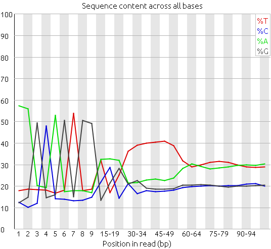{kind=link}
Nucleotide frequencies, after:
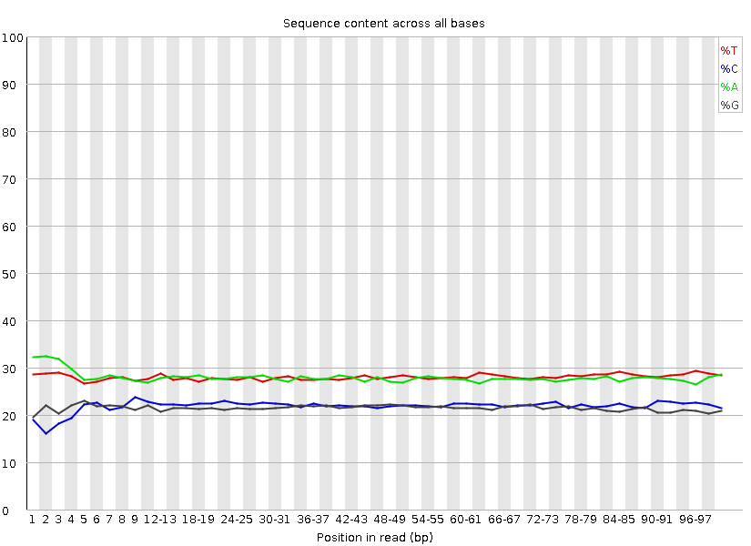{kind=link}
Length distribution, before:
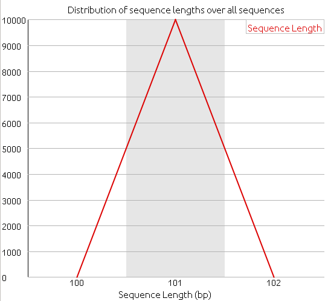{kind=link}
Length distribution, after:
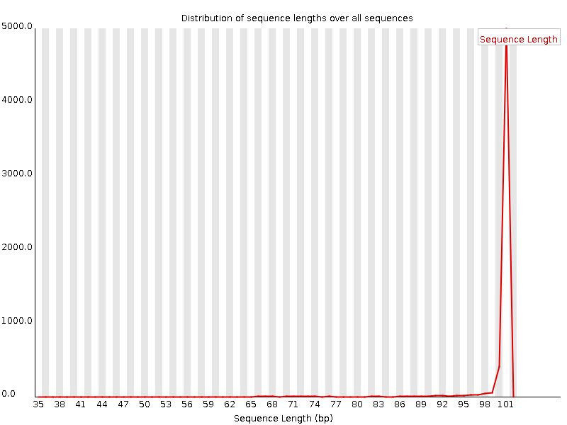{kind=link}
Quality boxplot, before:
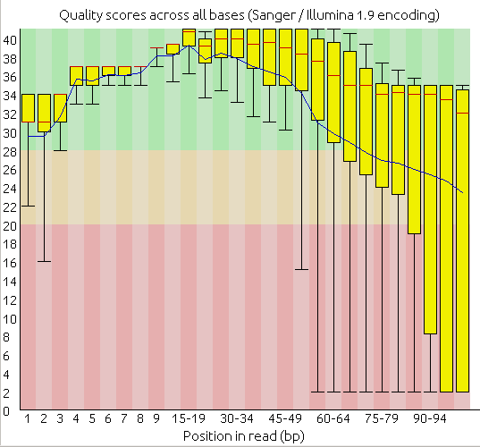{kind=link}
Quality boxplot, after:
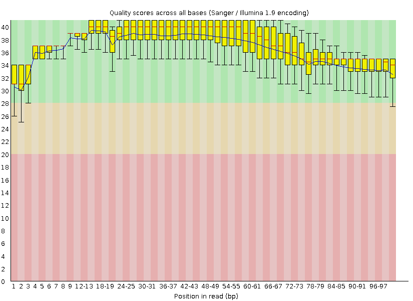{kind=link}
Clean the 454 and Illumina maize reads¶
We are going to replicate a complete SNP calling project along the different sections of the course. As a real world example we have prepared some public maize 454 and Illumina reads obtained from the SRA NCBI section. These new NGS sequences are not in the usual Genbank sections. The NCBI has created a new section called SRA (Sequence Read Archive) prepared for these reads. We will clean, map and analyze for SNPs these sequences.
First we will evaluate their quality and clean them.
If you have any problem with this practice you can read the complete walkthrough for this maize practice.
You can create a maize directory, download the sequence files and start with the practice.
Further reading¶
There are other documents with very useful documentation regarding the read Quality Assessment and Cleaning: